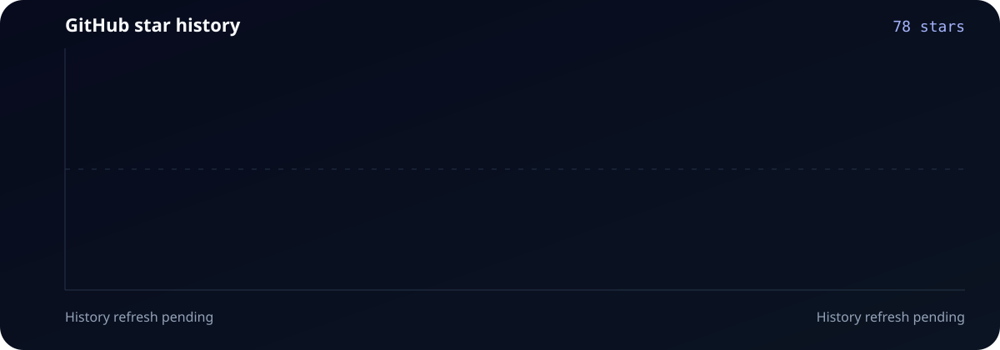

Repository contracts
A canonical manifest aligns agents, kits, local requirements, and external recommendations.
npm run validate
Choose a small team pack, preview every file, and keep specialist work behind an explicit review gate.
Safe quick start
No hidden write step: the installer shows the exact destination and file plan before changing your workspace.
# 1. Clone and inspect the repository
git clone --depth 1 --branch main https://github.com/aAAaqwq/AGI-Super-Team.git
cd AGI-Super-Team
# 2. Preview the Solo Founder starter kit
./install.sh --source "$PWD" --destination /path/to/review-workspace solo-founder
# 3. Apply explicitly, then verify
./install.sh --source "$PWD" --destination /path/to/review-workspace --apply solo-founder
python3 -m pip install --requirement requirements-dev.txt
npm test && npm run validate -- --warnings-as-errorsA compact operating team that turns one brief into an inspectable delivery trail.
CEO scopes the outcome, PE plans the implementation, and CCO prepares reviewable launch drafts. Public verification remains pending until the clean fixture is published.
Inspect the starter kitA canonical manifest aligns agents, kits, local requirements, and external recommendations.
npm run validate
Global preflight, explicit apply, existing-file protection, and failure without partial writes.
bash tests/installer/test_install.sh
Green checks are tied to a commit and fixture. A mismatched or stale receipt never displays as verified.
verification-receipt.json
How it works
Start with the smallest useful team. The workflow makes responsibilities and handoffs explicit without pretending every harness is equally proven.
Turns the request into an outcome, assigns roles, and defines the stop condition.
Work in bounded areas and return runnable changes with direct evidence.
Reviews contracts, limitations, and regression risk before release.
“Manifest available” is not the same as “fixture verified.” Status labels reflect that difference.
| Harness | Distribution | Status | Evidence |
|---|---|---|---|
| Codex | Native package | Primary | Package structure tested; client load receipt pending |
| Claude Code | Manifest | Pending | Fixture not published |
| Cursor / Gemini | Manifest | Pending | Fixture not published |
| OpenClaw | Legacy layout | Legacy | Migration guidance |
Contribute
Useful contributions make the team safer, more portable, or easier to verify. Every report should include a reproducible path.
Cached data loads when available.

| Date | Cumulative stars |
|---|
Built from GitHub’s current stargazer records. Unstars can revise earlier history. View JSON data.